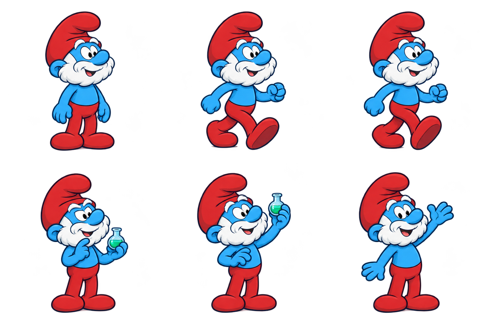
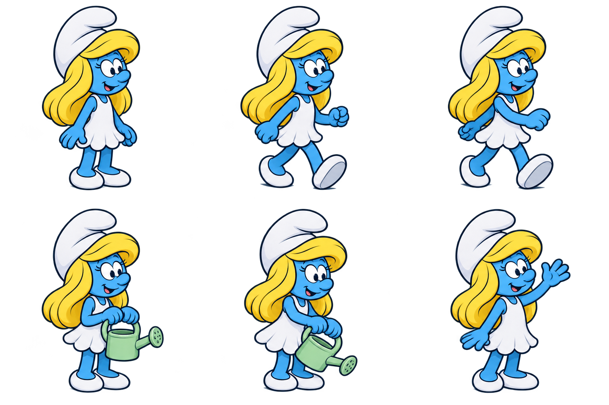
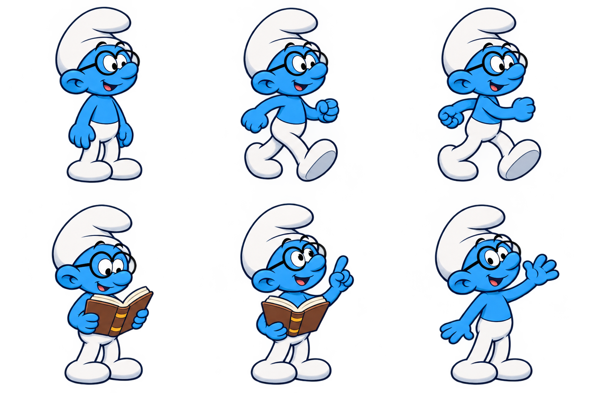
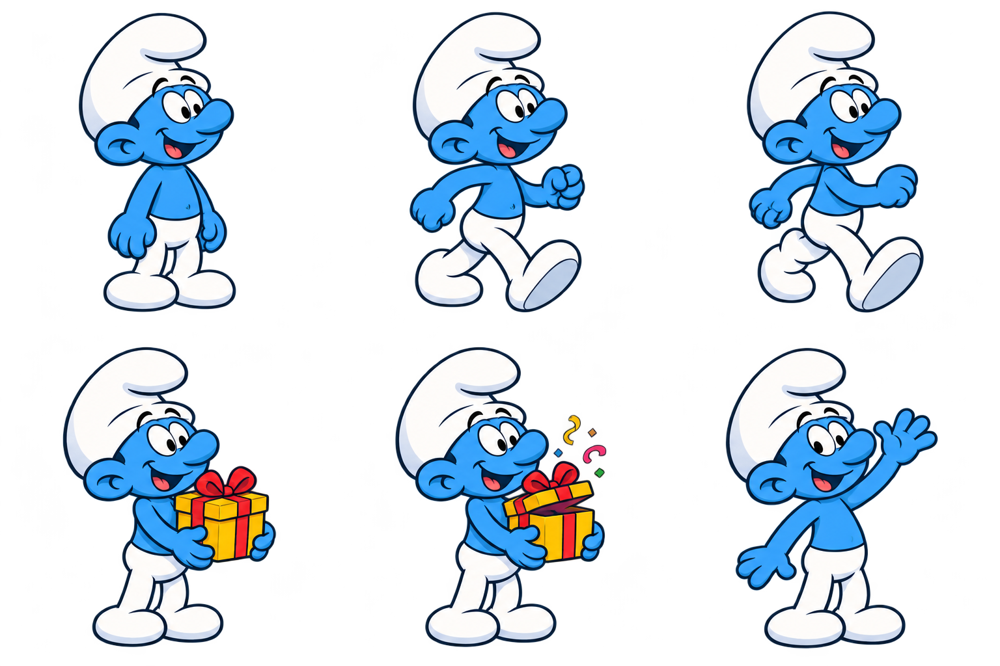
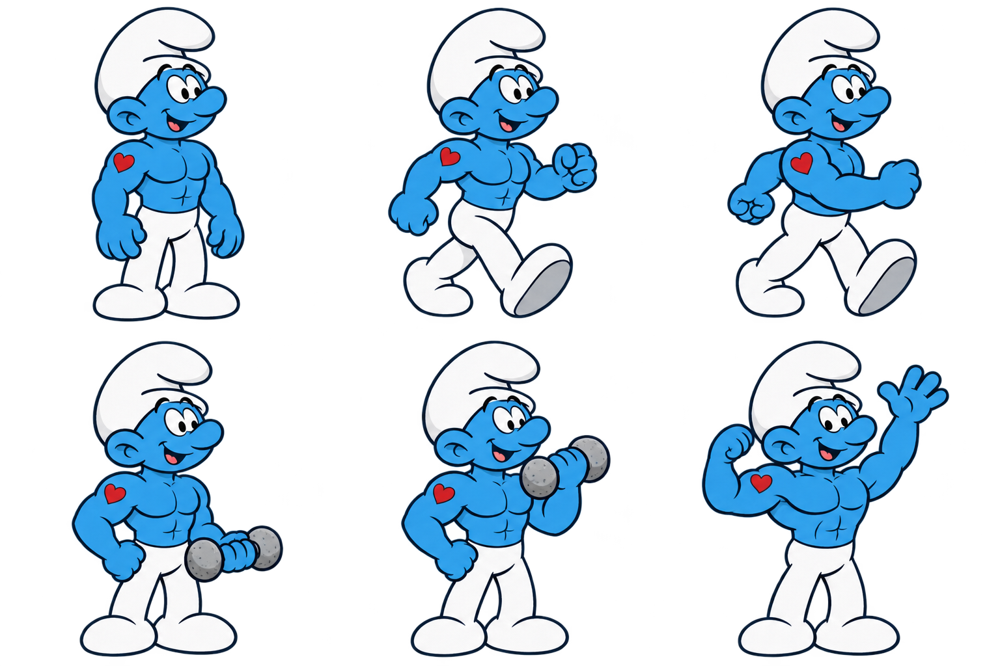
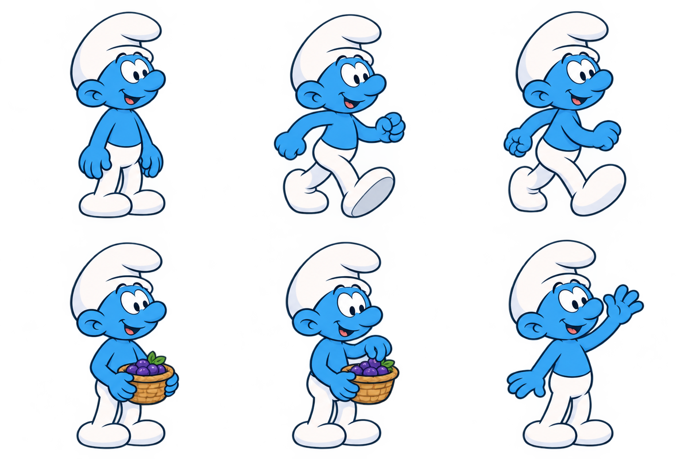

Papa Smurf
Reserved for coordinators. Red clothes, white beard and potion work at the alchemy bench.

AGENT WATCH / DOWNLOADABLE THEME
Papa coordinates at his alchemy bench while the village reads, builds, tends flowers, gathers berries and celebrates finished turns.
Use Agent Watch 0.3.0 or later for coordinator reservations, reusable generic Smurfs and individual character routines. Open Theme library → Refresh GitHub catalog → Smurfs → Download theme, then choose Use theme.

Reserved for coordinators. Red clothes, white beard and potion work at the alchemy bench.

White dress and blonde hair. Tends flowers and visits her pink mushroom home.

Round glasses and an open book. Reads, explains and visits the library.

Surprise gifts and confetti at the festival stage.

Heart tattoo, strong arms and stone weights at his exercise area.

The reusable villager for additional agents. Collects smurfberries and explores the forest.

The palette has 24 scenery types: eight mushroom buildings, two trees, smurfberry bushes, a well, bridges, toadstools, fallen logs, riverside rocks, alchemy and reading desks, a workshop bench, festival stage, harvest cart, training equipment, benches and flower gardens. Four ground types include grass, paths, cobblestones and flowing water. Chimneys produce animated smoke.
Choose Edit world below the scene to move, add, resize or mirror scenery, paint ground, and move character homes and activity destinations. Local layouts survive downloaded theme updates. The starting map contains 79 placed objects and 15 activities, with connected routes to every home and work destination.
Theme Studio lets you override action mappings. Character-specific routines appear in the idle summary. Make a personal copy to replace graphics or edit characters[].bindings and characters[].idleActivities. User action mappings take precedence over character and coordinator defaults. Waiting and interrupted agents keep their waiting behavior.
Theme manifest · Complete artwork prompts · Research and provenance · Application guide
Character details draw on Peyo Company’s profiles and the official Smurfs character guide. The mushroom-home forest setting follows the official setting description. The map, object placement and activity arrangement were created for this theme.